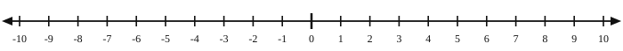

1.1 Integers & Number Lines
- Read and use a number line
- Find and describe the opposite of a number
- Find the absolute value of an integer on a number line
- Compare positive and negative numbers using >, <, and =
- Add and subtract integers on a number line
Warm-Up
1. What number is exactly halfway between 3 and 9?
6
2. Which number is bigger: −4 or −9?
−4 — it is farther right on the number line
3. Which is farther from 0: −7 or 5?
−7, because |−7| = 7 and |5| = 5
1.1.1The Number Line
- Every tick mark below is an integer — a whole number.
- Right of zero → positive Left of zero → negative
- Number lines can use any scale (1s, 5s, 10s…) and may be horizontal or vertical.
- Real-world number lines: answers vary — a thermometer, a ruler, a timeline

1.1.2Opposites

Both are 3 units from zero, on opposite sides. They are opposites.
1.1.3Absolute Value
- |x| means the distance from zero.
- Absolute value is never negative, because distance is never negative.
|−5| = 5
|5| = 5
Three set-ups that all work:
|3 − (−5)|
|−5 − 3|
3 + 5
Distance = 8 miles. What changes without absolute value? you could get −8, and distance is never negative
1.1.4Comparing Integers
a. 2 > −7
b. −4 > −5 two negatives — look again
Going left to right, negatives count up (−5, −4, −3…)
1.1.5Number Lines and Arithmetic
Add a positive → move right
Add a negative → move left
Subtract a positive → move left
Subtract a negative → move right
−2 + 6 = 4 Money story: owed $2, earned $6, now up $4
= 145 Money story: had $150, spent $5
= −50 Money story: had $400, spent $450, now $50 overdrawn
= 206 Money story: had $201, a $5 charge was refunded
Practice
Working With Number Lines
a. −4, 0, and 3
b. Your age
c. The number halfway between 5 and 9

7
Opposites
3. Opposite of 42 = −42
4. Opposite of −3 = 3
5. Draw a number line with two numbers that are opposites.
6. Does 3.5 have an opposite? If yes, what is it? yes, −3.5
Absolute Value
a. |−9| = 9
b. |6| = 6
c. |0| = 0
d. |−2.5| = 2.5
8. Two different numbers both have an absolute value of 12. What are they? 12 and −12
9. A hiker is 400 feet below the rim of a canyon. Her friend is 250 feet above the rim. Who is farther from the rim?
the hiker — |−400| = 400 is more than |250| = 250
Comparing Numbers
10. Which is greater, 5 or −10? 5
11. Which has the greater absolute value, 5 or −10? −10
12. Is 28 bigger than −30? yes Why? 28 is right of −30 on the number line
a. −11 > −13
b. 7 > −2
c. |−3| < |5|
a. −4 or −5 −4
b. 3 or the opposite of 7 3
c. |−5| or |4| |−5|
a. −7 and 2
b. The year you were born and the current year
Addition and Subtraction
a. −3 + 5 = 2
b. 3 − 5 = −2
c. −3 + (−3) = −6
d. 3 − (−3) = 6
Word Problems
Equation: −12 + 20 Answer: 8°F
Equation: −45 + (−30) Answer: −75 ft
Equation: −8 + 5 Answer: −$3